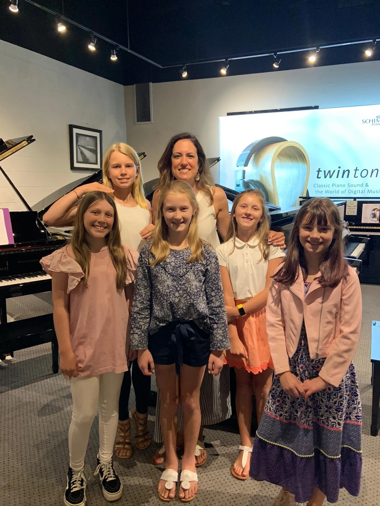

Group Lessons
Add the current group lesson description here.
Add the group lesson price here.
KB Piano Studio
Personalized piano lessons for students of all ages and experience levels.
Schedule a free trial lessonAbout
Hi! My name is Kim, and I live in Atlanta, Georgia. My journey with the piano began at age 4, when my parents discovered I could play any song by ear and enrolled me in lessons. That early spark grew into a lifelong passion for playing and teaching music over the past 20 years. I work with students of all ages and levels in schools, conservatories, camps, and my private studio.
My greatest joy is helping students build confidence and discover a passion for playing through strong, encouraging instruction. I keep my own love for music alive by playing in jazz quartets, chamber groups, church services, and private events. Outside of music, I love being in nature and spending time with friends and family.
My teaching style is eclectic and adapted to each student's learning style. Whether you are a beginner or returning to piano after years away, I'd love to help you discover the joy of playing.
Lessons
Add the current group lesson description here.
Add the group lesson price here.
Add the current private lesson description here.
Add the private lesson price here.

Learning together
Contact
Reach out to discuss lesson options, availability, and whether KB Piano Studio is the right fit.
Email KB Piano Studio